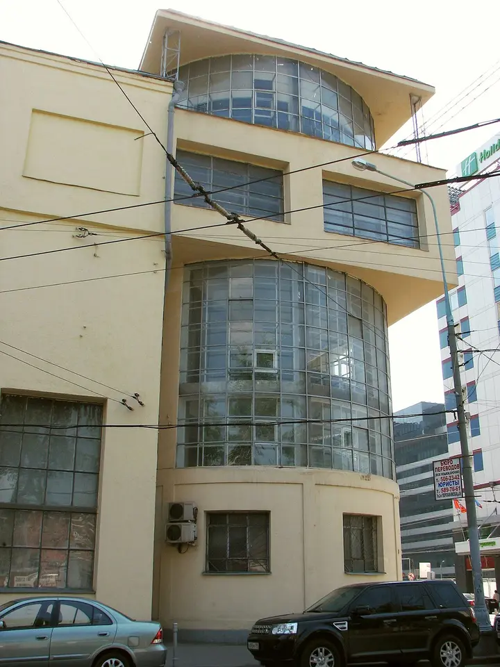

Подборку собрали 13 ноября, прошедшие события скрыты. Свежая афиша — на главной

Фото: Guldfisken, CC BY-SA 3.0 · Wikimedia Commons
Конструктивизм · ЦАО
Клуб имени Зуева
Здание Голосова 1929 года: стеклянный цилиндр лестницы врезан в бетонные этажи. Вечером, когда в театре «Квартет И» идёт спектакль, цилиндр светится изнутри.
- ₽ · до 1 500 ₽ на человека
- Новое в каталоге
- в 1 плане
- 1 событие в афише
Позвать сюда: Клуб имени ЗуеваОткрыть в каталоге: Клуб имени ЗуеваМаршрут до места: Клуб имени Зуева
Адрес и детали
- Адрес
- Лесная ул., 18
Открыть на Яндекс Картах (в новой вкладке) - Метро
- м. Белорусская
- Округ
- Центр (ЦАО)
- Цена
- до 1 500 ₽ на человека
- Проверено
- работает — проверили в ноябре 2026
Планы с этим местом 1
- Клуб имени Зуева · Конструктивизм · м. Белорусская
- 9 минут пешкомКультурный код · Кафе
Конструктивизм Голосова: вечером стеклянная лестница светится изнутри. Перед этим — кофе в «Культурном коде» на Чаянова.
Открыть план: Стеклянный цилиндр клуба ЗуеваПозвать сюда: Стеклянный цилиндр клуба Зуева
Фото: Guldfisken, CC BY-SA 3.0 · Wikimedia Commons

Афиша площадки 1
ДК им. Зуева · м. Белорусская · 18+
Комедия на троих актёров о том, чем живут и чего боятся современные мужчины. Вечер для взрослой компании или пары.
Подробнее: Всё о мужчинахПозвать сюда: Всё о мужчинахБилеты : Всё о мужчинах (страница с билетами, откроется в новой вкладке)
Фото: Guldfisken, CC BY-SA 3.0 · Wikimedia Commons
Похожие рядом


Что ещё рядом

Как позвать
- Выбери план, место или событие — в карточке адрес, цены и маршрут в Яндекс Картах.
- Нажми «Позвать сюда» — соберётся приглашение-игра для свидания или голосование для компании.
- Отправь ссылку в любой мессенджер: тебе ответят, а компания отметит, куда и когда может. Бесплатно и без регистрации.